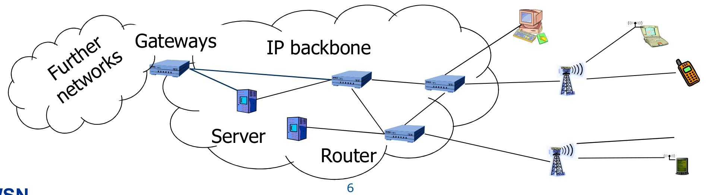
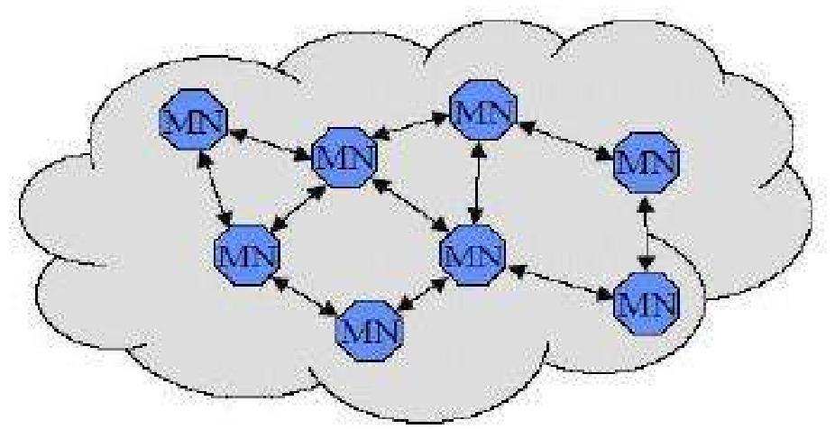
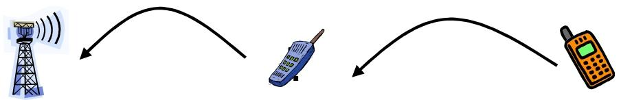
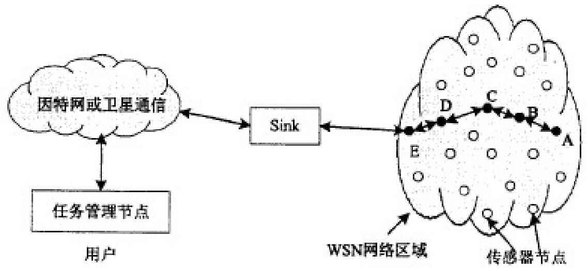
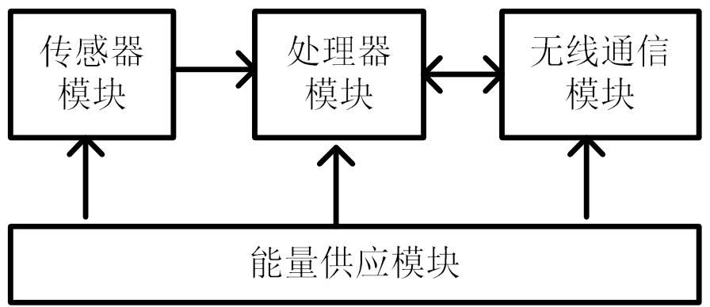
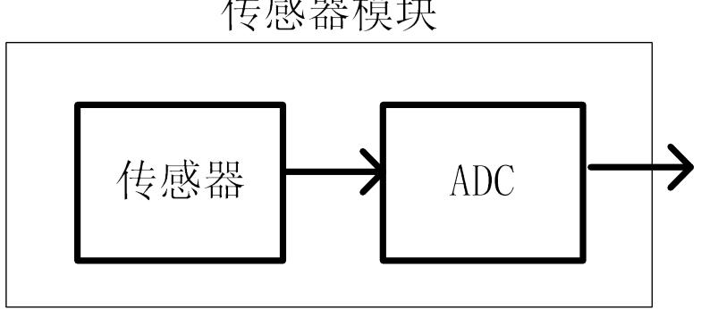
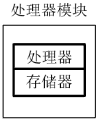
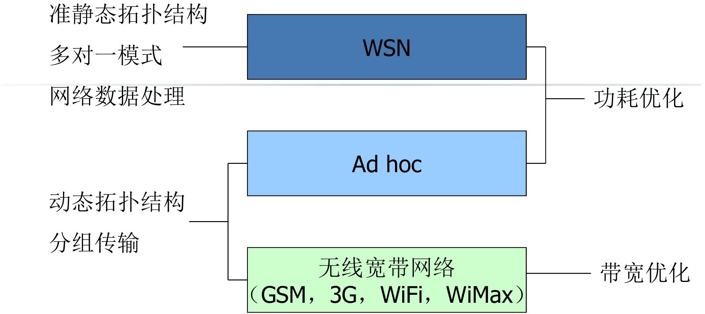

WSN概述
“先讲传统方案（基于基础设施的无线网络）→ 暴露其痛点 → 给出替代方案（Ad hoc 网络）→ 详解方案特点与挑战”
基于基础设施的无线网络
这类无线网络的本质是 “所有终端都靠固定设施连接，没有设施就没法通信”。
常见类型
- 蜂窝移动网络：GSM（2G）、UMTS（3G）、5G（我们手机常用的网络）；
- 有线主干网延伸的无线网络：比如企业 WiFi（靠路由器 / AP，而路由器要连有线宽带）、校园网 WiFi。
通信终端和基站的关系
- 通信终端以无线的方式与基站通信
- 通信终端之间的通信要通过基站以及主干网来完成
- 移动性通过基站的切换来支持

局限性：基础设施失效；成本太高 / 不方便部署；没有时间部署设施
Wireless ad hoc 网络
对于上述基于基础设施的无线网络的局限性，可以用 Wireless ad hoc 网络解决；
- 利用无线终端自身的组网能力,构造一个不需要通信基础设施的“专用的”网络｡
- 不用基站、路由器这些固定设施，全靠无线终端自己的能力，临时搭建一个 “只为当前场景服务” 的专用网络。

Ad hoc 网络的两大核心特点（无基础设施带来的 “天生属性”）
- 没有核心设备 → 自组织 + 多跳通信
- 网络里所有终端地位平等，终端开机后会自动扫描周围的同类设备，主动建立连接、形成网络
- MAC 是分布式的；
- 路由靠邻居 —— 单个终端通信距离有限（比如几十米），要给远处的设备发数据，就找中间的 “邻居终端” 帮忙转发，这就是 “多跳（multi-hop）”

- 支持移动 → 灵活但复杂（衍生出 MANET）
- 这类 “支持移动的 Ad hoc 网络” 叫 MANET（mobile ad hoc networks，移动自组织网络）
- 终端移动后，原来的 “邻居” 可能断开连接
- 需要 “自适应协议”—— 网络能实时感知拓扑变化，自动调整数据转发路径，保证通信不中断
Ad hoc 网络的最大挑战：电池电源约束
- 考虑节能型网络协议：路由协议节能：选 “能耗最低” 的转发路径；网络实时监测每个终端的电池电量，动态调整任务
传感器（Sensors）：
能 “感受” 物理量（比如温度、声音、振动、压力），并把这些物理量转换成计算机能识别的电信号的设备。
即可以通过传感器实现对环境、现象或对象的感知，然后将数据提供给网络
无线传感器网络（WSN）发展历程简洁总结
- 概念萌芽（1980 年）：卡内基 - 梅隆大学启动 DSN 项目，明确 “分布式、低功耗、自主协作” 的 WSN 核心理念。
- 技术攻坚（1993-2004 年）：DARPA 等资助 WINS、Smart Dust 等项目，突破硬件集成、低功耗、微型化等核心技术，以军事需求为导向。
- 民用拓展（2002-2003 年）：英特尔明确 WSN 民用场景，美国 NSFC 资助基础理论研究，推动技术从军用转向通用。
- 全球推广（2006 年后）：中国将 WSN 纳入国家科技战略，“感知中国” 推动其与物联网融合，应用场景全面拓展，释放近距离、密集观测潜能。
无线传感器网络(Wireless Sensor Networks)
WSN的概念
WSN 的核心是 “分布式感知 + 自组织组网”
[!note]
由部署在监测区域内的大量、廉价、微型、传感器节点组成，通过无线通信方式形成的一个多跳、自组织的网络系统，其目的是协作地感知、采集和处理网络覆盖区域中感知对象的信息，并发送给观察者。
- 在监测区域部署大量 “微型传感器节点”
- 节点之间通过无线信号通信，能自动连接形成网络（自组织）；同时节点间距远，数据会通过多个节点接力转发（多跳）
- 所有节点协同工作，共同感知、采集环境或对象的信息，再对数据简单处理后，最终把有效信息传递给需要的人或系统

传感器网络三要素
传感器网络的核心是 “谁来采集(传感器节点）→采集什么（感知对象）→谁用数据（观察者）”
- 传感器节点：网络的 “数据采集执行者”
- 部署在监测区域的 “微型智能终端”，比如微型的嵌入式系统（体积小能耗小）
- 实现环境、现象或对象的物理感知（感知能力）
- 可以对采集的信号进行预处理（计算能力）
- 通过无线通信技术报告感知信息（通信能力）
- 感知对象：网络的 “监测目标”
- 观察者感兴趣、由传感器网络感知的对象，是数据采集的核心指向。
- 一个观察者可以在一个或多个传感器网络环境中观测多种现象
- 观察者：网络的 “数据使用者与指令发起者”
- 需要利用传感器数据的人、系统或设备
- 传感器网络发布的感知信息的用户
- 向传感器网络发出查询并接受回答
- 根据感知信息进行各种决策
传感器网络结构
传感器网络的结构核心是 “三层节点分工协作”，底层传感器节点负责 “采集数据”，中间汇聚节点负责 “中转数据”，顶层任务管理节点负责 “调度与用数据”，再加上传感器节点内部的 “四大功能模块”，构成完整工作体系
网络层面：三层核心节点（数据从采集到使用的链路）
- 传感器节点（底层 “数据采集小兵”）
- 直接接触监测现场，数量最多，密集部署在监测区域。
- 采集、处理、控制和通信
- 网络功能：兼顾网络终端和路由器
- 微型化（比如 CrossBow Mica Motes 仅指甲盖大小）、低成本、电池供电（Active 模式 8mA，休眠模式 < 15μA，靠 2 节 AA 电池就能用很久）
[!tip]
节点层面：传感器节点的 “四大内部模块”
每个传感器节点是微型智能设备，内部由 4 个模块组成

传感器模块（“感知器官”）：直接 “感受” 环境，把温度、湿度、风力、噪声、物体移动等物理信号，转换成电信号（原始数据），即负责监测区域内信息的采集和数据转换

处理器模块（“大脑核心”）：控制整个节点的操作，存储和处理本身采集的数据，也处理其他节点发来的数据；
可选：微控制器( Microcontroller)；数字信号处理器（DSP）；可编程逻辑阵列（FPGA）；专用集成电路（ASIC）

无线通信模块（“嘴巴和耳朵”）：和其他传感器节点、汇聚节点进行无线通信，收发采集数据和控制指令；
支持射频（RF，比如 CrossBow 用的 CC2420，2.4G 频段、250kbps 速率）、光、声音等介质，支持低功耗模式（省电池）
能量供应模块（“心脏”）：给整个传感器节点供电，核心是电池，部分支持光电池、振动发电等辅助供电；
汇聚节点（中间 “数据中转站”，Sink 节点）
- 网络的 “网关”；连接外部网络，转协议，收发数据
- 收发数据：收集所有传感器节点（或经多跳转发）传来的数据；把处理后的批量数据转发给管理节点，同时把管理节点的任务指令下发给传感器节点；
- 转协议：把传感器网络的专用协议，转换成互联网、卫星等外部网络能识别的协议；实现两种协议栈之间的通信协议转换
- 连接外部网络：连接传感器网络与Internet等外部网络
管理节点（顶层 “指挥中心”）
- 网络配置和管理；
- 发布监测任务，收集监测数据
无线传感器网络的特征
- WSN 节点的核心短板：资源受限
- 能量有限：多数节点靠传统电池供电，野外 / 偏远场景无法充电；
- 通信能力有限：单个节点只能传几十到 100 米，远了要靠多跳转发；
- 能量消耗和通信距离关系 ：
E = k * d^n (2<n<4) - 计算和存储能力有限
[!tip]
传感器网络的六大核心特点：
- 大规模网络：节点数量大､分布广､密集
- 自组织网络：无需基础设施，未知区域自动组网，撒播节点就能快速形成网络
- 动态网络：网络结构随时变：比如节点电池没电故障、通信信号中断、部分节点移动，或新节点加入，都会让网络连接关系（拓扑）改变
- 可靠网络：硬件可靠､通信保密数据安全
- 应用相关网络：不同的应用背景,对硬件､软件､网络协议影响巨大
- 以数据（任务）为中心：用户不关心 “某个节点是否正常”，只关心 “事件结果”
无线传感器网络与物联网、计算机网络的关系
三者是 “局部 - 整体 - 支撑” 的协同关系，核心逻辑：WSN 是物联网的 “感知核心”，计算机网络是物联网的 “传输通道”，共同构成 “感知 - 传输 - 应用” 的完整闭环
物联网（IoT）：“万物互联” 的整体框架：涵盖 感知层、网络层、应用层 三层架构
WSN：物联网 “感知层” 的核心技术：WSN 的核心作用是 “采集物理世界数据”
计算机网络：物联网 “网络层” 的传输支撑：计算机网络（包括互联网、局域网、5G/WiFi 等）是数据传输的 “通道”
物联网是 “完整的智能系统”，WSN 负责 “收集信息”，计算机网络负责 “传递信息”，三者缺一不可：没有 WSN，物联网就 “看不见、听不见”；没有计算机网络，WSN 采集的数据就 “传不出去、用不起来”。
WSN 与 MANET 的对比及三种网络关系
WSN 与 MANET，两者都是 “无需人工干预” 的无线自组织网络，不用依赖基站、路由器等固定基础设施
- 节点通过无线通信传输数据
- 节点开机自动发现邻居，动态组网
- 单个节点通信距离有限，数据靠中间节点多跳转发
| 对比维度 | WSN（无线传感器网络） | MANET（移动自组织网络） |
|---|---|---|
| 节点数量 | 极其庞大（几百到几千个） | 较少（几十到上百个） |
| 节点状态 | 多数静止（比如部署在森林、桥梁的传感器） | 全移动（比如士兵携带的终端、移动设备） |
| 节点分布 | 密集部署（监测区域内均匀 / 重点覆盖） | 分布较松散（随节点移动动态变化） |
| 拓扑变化原因 | 主要因节点能量耗尽、故障导致（多数节点不动） | 主要因节点移动导致（能量充足，节点位置频繁变） |
| 能量约束 | 严格（靠电池供电，无法持续补充，需极致节能） | 宽松（可充电或持续供电，无需过度考虑能耗） |
| 通信模式 | 多对一（所有节点向汇聚节点 / Sink 节点传数据） | 点到点（任意节点之间可直接通信，无固定接收端） |
三种网络的关系（WSN、Ad hoc、无线宽带网络）
| 网络类型 | 核心拓扑结构 | 通信模式 | 核心优化目标 | 典型代表 / 场景 |
|---|---|---|---|---|
| WSN | 准静态拓扑（多数节点不动，仅少数故障 / 新增） | 多对一（节点→Sink 节点） | 功耗优化（省电池，延长网络寿命） | 森林火险监测、桥梁结构监测 |
| Ad hoc | 动态拓扑（节点移动，连接关系频繁变） | 分组传输（任意节点间灵活通信） | 适配拓扑变化（保证移动时通信稳定） | 战场单兵通信、灾区临时组网 |
| 无线宽带网络 | 固定拓扑（依赖基站 / 路由器等基础设施） | 点对多 / 多对点（终端→基站→终端） | 带宽优化（提升传输速率，支持大量数据） | 5G、WiFi、GSM（手机通信） |
